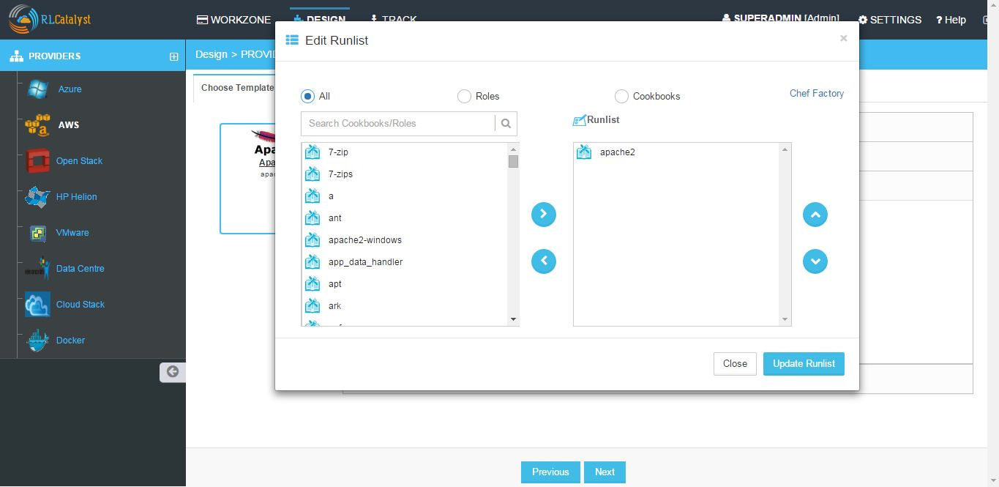
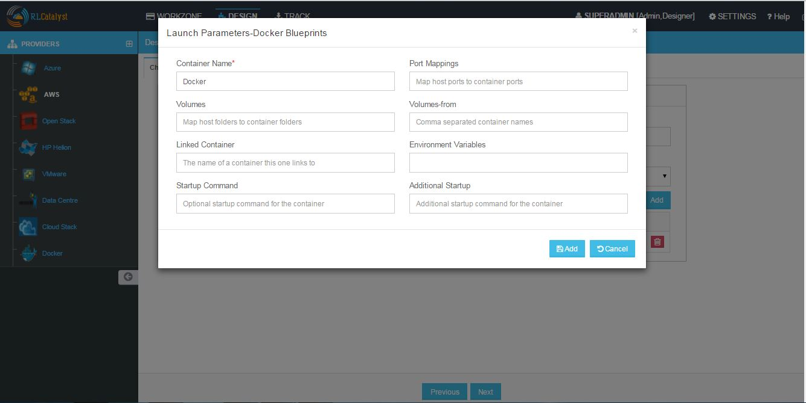
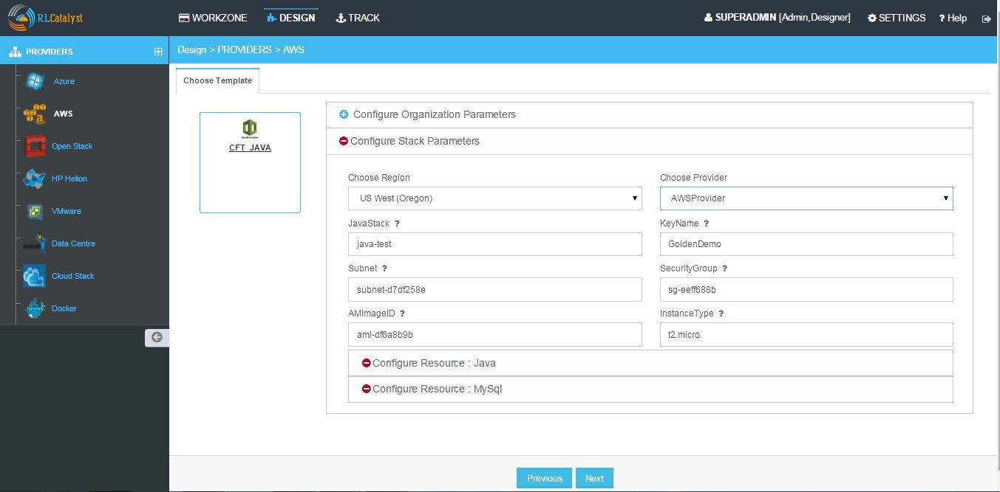

Design¶
User defined Blueprints can be created in the Design section associated with the respective providers and Template Types.
If you want to know about Template types please refer to Gallery Setup .
Blueprints are predefined templates which can be used by service consumers to Launch the instances. Blueprints are designed by Service Designers. Each blueprint stores the metadata of the instance, variables, actions and activity.
RL Catalyst Design options allows you to create Blueprints by using predefined templates.
Creating BluePrints for AWS provider
1. Software Stack
Provider: It offers some form of IT infrastructure that is commercially distributed and sourced across several subscribers - typically businesses. Cloud providers deliver cloud solutions through on-demand, pay-as-you-go systems as a service to customers and end users. Cloud provider customers access cloud resources through Internet and programmatic access and are only billed for resources and services used according to a subscribed billing method.
Images: An image of a virtual machine is a copy of the VM, which may contain an OS, data files and applications.
Region: An AWS account provides multiple regions so that you can launch Amazon EC2 instances in locations that meet your requirements.
VPC: Amazon Virtual Private Cloud, lets you provision a logically isolated section of the Amazon Web Services (AWS) Cloud where you can launch AWS resources in a virtual network that you define.
Subnet: A subnet is a range of IP addresses in your VPC. You can launch AWS resources into a subnet that you select.
KeyPair: Amazon EC2 uses public–key cryptography to encrypt and decrypt login information. Public–key cryptography uses a public key to encrypt a piece of data, such as a password, then the recipient uses the private key to decrypt the data. The public and private keys are known as a key pair.
Instance Type: It specifies the hardware of the host computer used for your instance.
Security group: A security group acts as a virtual firewall that controls the traffic for one or more instances. When you launch an instance, you associate one or more security groups with the instance. You add rules to each security group that allow traffic to or from its associated instances.
Instances to Launch: Indicates how many instances you want on launch of that particular blueprint.
- In the Design page select AWS Provider and choose Software Stack Template Type and click Next

- From the Template cards choose template and click Next
NOTE - If you have not created a template of Software Stack template type in Settings, follow the instructions at Templates.

- Once you choose the Template, Enter the details for creating the BluePrint
Configure Provider Parameters - Choose OS, Provider, Image, Region, VPC, Subnet, Keypair, Instance Type, Security Group,No of Instances.
Configure Organization Parameters - Choose Organization, Business Group,Project and Enter Blueprint name.

Configure Runlist Parameters - Click + icon (Edit Runlist), select Cookbooks / Roles and add to Runlist and update runlist.
NOTE - You can customize the order of Runlist after adding to runlist and then clicking on up and down arrows.

- Configure Application - Application URL allows you to navigate to the application from the Instance Card.
- Application URL - Add the Application Name and URL in below format [http://$host:port/appname] and save.
Following video demonstrates how to create Blueprint for AWS provider in RLCatalyst:
2. Docker
- In the Design page select AWS provider and choose Docker Template Type and click Next
- Choose the Docker Template and click Next
NOTE - If you have not created a template of Docker template type in Settings, follow the instructions at Templates.
- Configure Organization Parameters - Choose Organization, Business Group,Project and Enter Blueprint name


- Click Launch Parameters icon and Enter Container Name, Port mappings, Volumes, Volumes-from, Linked Container name, Environment variables, Start up Command, Additional StartUp command and Add.
3. Cloud Formation
- In the Design page select AWS provider and choose Cloud Formation Template Type and click Next
- Choose the Cloud Formation Template and click Next
NOTE - If you have not created a template of Cloud formation template type in Settings, follow the instructions at Templates.
- Configure Organization Parameters - Choose Organization, Business Group,Project and Enter Blueprint name

- Configure Stack Parameters - Choose Region, Provider
NOTE - Remaining fields are the attributes present in the JSON file which you uploaded while creating Cloud Formation Template.

Following video demonstrates how to create and launch cloud formation template in RLCatalyst:
4. OSImage
- In the Design page select AWS Provider and choose OSImage Template Type and click Next
- From the Template cards choose OSImage Template and click Next
- NOTE-
- In OSImage template type the VMImages which you created in Settings -> VM Images page will be listed, based on the selection of the provider in the provider tree.
- Suppose If you select ubuntu image, In Choose provider parameters section Choose operating system, Choose Provider, choose available image is selected by default.
- Similarly when you select Centos or Windows image, In Choose provider parameters section corresponding operating system, provider and available image will be selcted by default.
Configure Provider Parameters - Choose Region, VPC, Subnet, Keypair, Instance Type, Security Group,No of Instances.
Configure Organization Parameters - Choose Organization, Business Group,Project and Enter Blueprint name.
Configure Runlist Parameters - Click + icon (Edit Runlist), select Cookbooks / Roles and add to Runlist and update runlist.
- Configure Application - Application URL allows you to navigate to the application from the Instance Card.
- Application URL - Add the Application Name and URL in below format [http://$host:port/appname] and Save.
Creating BluePrints for AZURE provider
1. SoftwareStack
Security Group Ports: Security group ports contains a list of Access Control List rules that allow or deny network traffic to your VM instances in a Network.
Locations: It enables Azure customers to achieve higher performance and it supports their requirements and preferences regarding data location.
- In the Design page choose AZURE provider and SoftwareStack Template Type and click Next
- Choose the SoftwareStack Template and click Next
NOTE - If you have not created a template of SoftwareStack template type in Settings, follow the instructions at Templates.
Configure Provider Parameters - Choose OS, Provider, Image, Security Group Ports, Location, VPC, Subnet, Keypair, Instance Size, No of Instances.
Configure Organization Parameters - Choose Organization, Business Group,Project and Enter Blueprint name.
Configure Runlist Parameters - Click + icon (Edit Runlist), select Cookbooks / Roles and add to Runlist and update runlist.
- Configure Application - Application URL allows you to navigate to the application from the Instance Card.
- Application URL - Add the Application Name and URL in below format [http://$host:port/appname] and Save.
2. OSImage
- In the Design page select AZURE Provider and choose OSImage Template Type and click Next
- From the Template cards choose OSImage Template and click Next.
NOTE-
- In OSImage template type the VMImages which you created in Settings -> VM Images page will be listed, based on the selection of the provider in the provider tree
- Suppose If you select ubuntu image, In Choose provider parameters section Choose operating system, Choose Provider, choose available image is selected by default.
- Similarly when you select Centos or Windows image, In Choose provider parameters section corresponding operating system, provider and available image will be selcted by default.
Configure Provider Parameters - Choose Security Group Ports, Location, VPC, Subnet, Keypair, Instance Size, No of Instances.
Configure Organization Parameters - Choose Organization, Business Group,Project and Enter Blueprint name.
Configure Runlist Parameters - Click + icon (Edit Runlist), select Cookbooks / Roles and add to Runlist and update runlist.
- Configure Application - Application URL allows you to navigate to the application from the Instance Card.
- Application URL - Add the Application Name and URL in below format [http://$host:port/appname] and Save.
3. ARMTemplate
Resource group: It is a container that holds related resources for an application. The resource group could include all of the resources for an application, or only those resources that are logically grouped together.
- In the Design page select AZURE Provider and choose ARMTemplate Type and click Next
- Choose the ARMTemplate and click Next
NOTE - If you have not created a template of ARM template type in Settings, follow the instructions at Templates.
NOTE - Make sure You have created Resource group in your Azure portal
- Configure Organization Parameters - Choose Organization, Business Group,Project and Enter Blueprint name
- Configure Template Parameters - Choose Provider, Resource Group
NOTE - Remaining fields are the attributes present in the JSON file which you uploaded while creating ARMTemplate.
Following video demonstrates how to create ARM Template, Blueprint, Launch, Update Configuration, Connect to the Instance in RLCatalyst:
Creating BluePrints for OpenStack provider
1. SoftwareStack
Flavours: Virtual hardware templates are called “flavors”. It defines sizes for RAM, disk, number of cores, and so on.
- In the Design page select OpenStack Provider and choose SoftwareStack Template Type and click Next
- Choose the SoftwareStack Template and click Next
NOTE - If you have not created a template of SoftwareStack template type in Settings, follow the instructions at Templates.
Configure Provider Parameters - Choose OS, Provider, Image, Flavour, Network, Subnet, Security Group.
Configure Organization Parameters - Choose Organization, Business Group,Project and Enter Blueprint name.
Configure Runlist Parameters - Click + icon (Edit Runlist), select Cookbooks / Roles and add to Runlist and update runlist.
- Configure Application - Application URL allows you to navigate to the application from the Instance Card.
- Application URL - Add the Application Name and URL in below format [http://$host:port/appname] and Save.
2. OSImage
- In the Design page select OpenStack Provider and choose OSImage Template Type and click Next
- Choose the OSImage Template and click Next
NOTE-
- In OSImage template type the VMImages which you created in Settings -> VM Images page will be listed, based on the selection of the provider in the provider tree.
- Suppose If you select ubuntu image, In Choose provider parameters section Choose operating system, Choose Provider, choose available image is selected by default.
- Similarly when you select Centos or Windows image, In Choose provider parameters section corresponding operating system, provider and available image will be selcted by default.
Configure Provider Parameters - Choose Flavour, Network, Subnet, Security Group.
Configure Organization Parameters - Choose Organization, Business Group,Project and Enter Blueprint name.
Configure Runlist Parameters - Click + icon (Edit Runlist), select Cookbooks / Roles and add to Runlist and update runlist.
- Configure Application - Application URL allows you to navigate to the application from the Instance Card.
- Application URL - Add the Application Name and URL in below format [http://$host:port/appname] and Save.
Following video demonstrates how to create Openstack Blueprint, Launch, Update Configuration, Connect to Instance, Add Application URL in RLCatalyst:
Creating BluePrints for VMware provider
Datastore: A datastore is a manageable storage entity, usually used as a repository for virtual machine files including log files, scripts, configuration files, virtual disks, and so on.
1. SoftwareStack
- In the Design page select VMware Provider and choose SoftwareStack Template Type and click Next
- Choose the SoftwareStack Template and click Next
NOTE - If you have not created a template of SoftwareStack template type in Settings, follow the instructions at Templates.
Configure Provider Parameters - Choose OS, Provider, Image, Data Store, No of Instances.
Configure Organization Parameters - Choose Organization, Business Group,Project and Enter Blueprint name.
Configure Runlist Parameters - Click + icon (Edit Runlist), select Cookbooks / Roles and add to Runlist and update runlist.
- Configure Application - Application URL allows you to navigate to the application from the Instance Card.
- Application URL - Add the Application Name and URL in below format [http://$host:port/appname] and Save.
2. OSImage
- In the Design page select VMware Provider and choose OSImage Template Type and click Next
- Choose the OSImage Template and click Next
- NOTE-
- In OSImage template type the VMImages which you created in Settings -> VM Images page will be listed, based on the selection of the provider in the provider tree
- Suppose If you select ubuntu image, In Choose provider parameters section Choose operating system, Choose Provider, choose available image is selected by default.
- Similarly when you select Centos or Windows image, In Choose provider parameters section corresponding operating system, provider and available image will be selcted by default.
Configure Provider Parameters - Choose Data Store, No of Instances.
Configure Organization Parameters - Choose Organization, Business Group,Project and Enter Blueprint name.
Configure Runlist Parameters - Click + icon (Edit Runlist), select Cookbooks / Roles and add to Runlist and update runlist.
- Configure Application - Application URL allows you to navigate to the application from the Instance Card.
- Application URL - Add the Application Name and URL in below format [http://$host:port/appname] and Save.